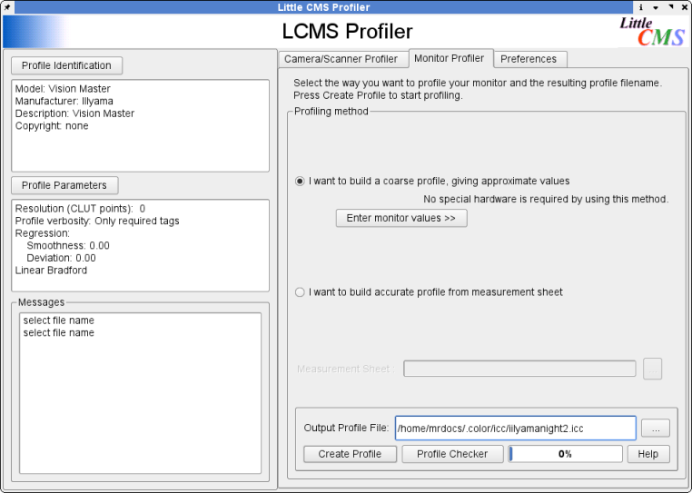

For those running BSD, Linux or Unix LProf is an essential tool for making color management work reliably in Scribus. Why so?
LProf is the only graphical tool available on Linux and Unix capable of creating ICC monitor profiles or scanner profiles. It also works on Windows and, soon, Mac OS X. Very simply LProf is a tool for creating an ICC profile of your monitor which helps make color managed previews more accurate. Think of a monitor profile as a set of glasses which magically transform your eyes to see with perfect color balance. Within Scribus a correct monitor profile can make a big difference in viewing accurately how your print or PDF will appear on a PostScript printer or when printed commercially. Without an individual profile of your monitor — no two monitors are alike — you have no real assurance the color transforms will be anywhere near close, when you are for example sending PDFs to a printer.
LProf has a simple step by step method to walk you through creating a profile of your monitor which then can be used in Scribus. You should take the 5 minutes it takes to create a profile and then add this to your Scribus Color management preferences. LProf can also create profiles for your scanner or digital camera. A look at the LProf's documentation will give you a more detailed understanding of its capabilities.
Currently available released version (0.11.4) doesn't allow using calibration devices yet. Adding this feature is a work in progress and quite successful one: with the next version of LProf you will be able to use devices like X-Rite DTP94, EyeOne Display 2 and EyeOne Display LT to measure your display on both Windows and Linux.
On Mac OS X, you can also use the native built in ColorSync applet to create a monitor profile. On Windows, if you have installed Photoshop, Indesign or Illustrator, Adobe Gamma performs a similar, if more simplistic method of creating a monitor profile.
|  |